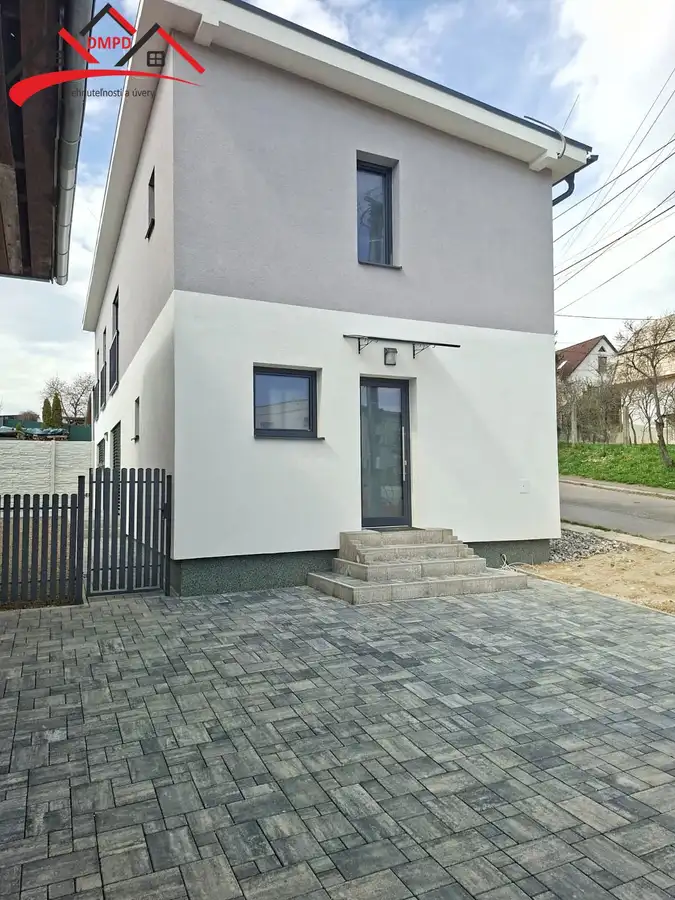
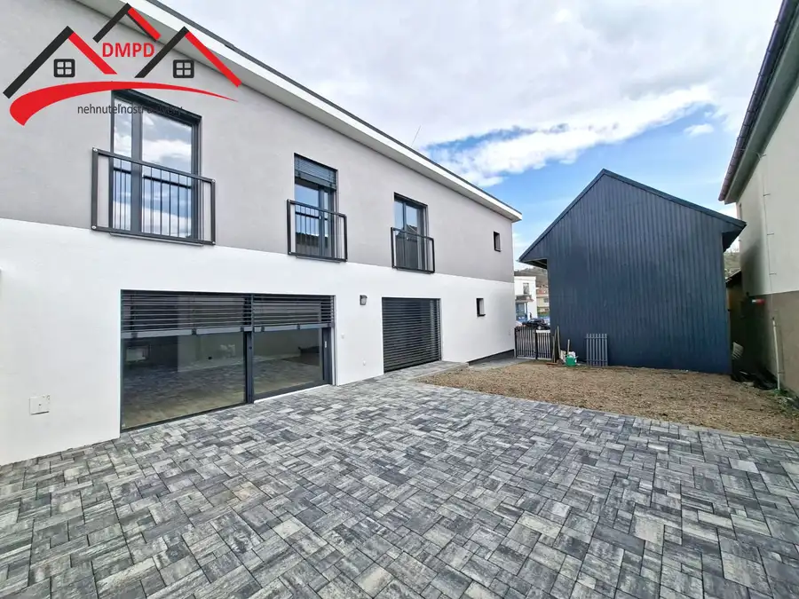
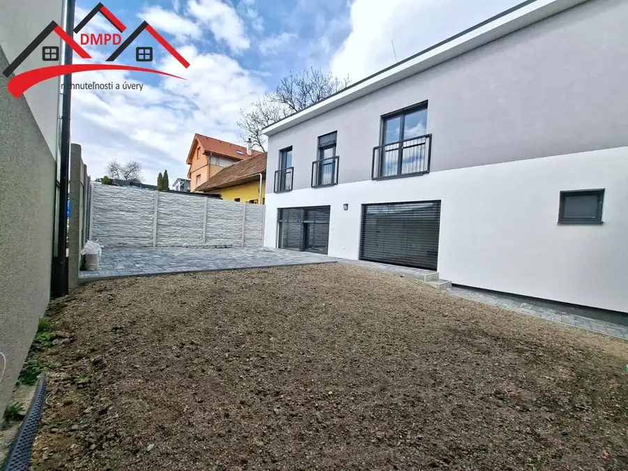
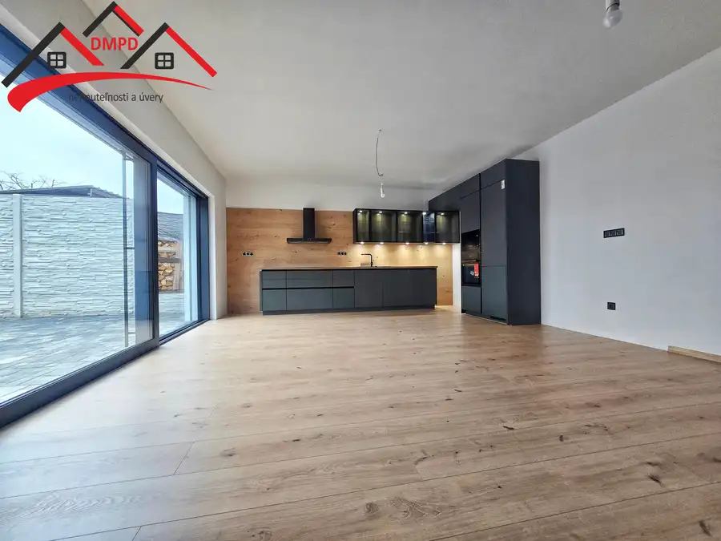
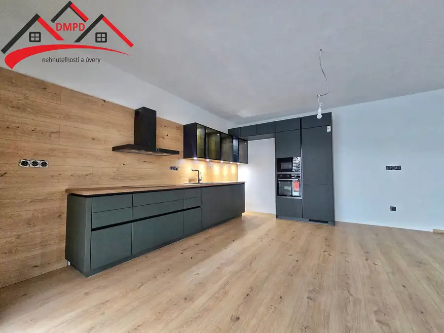
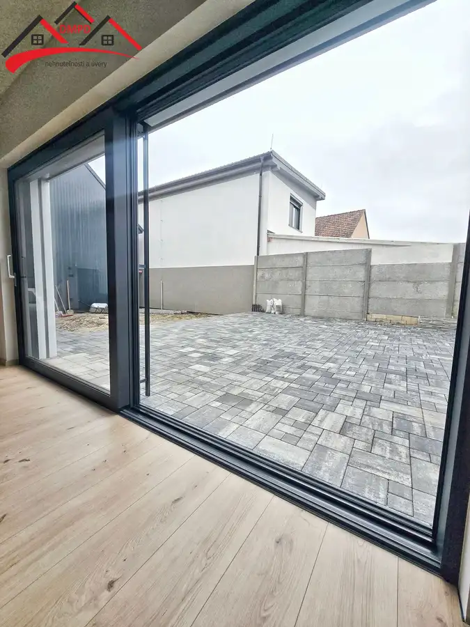
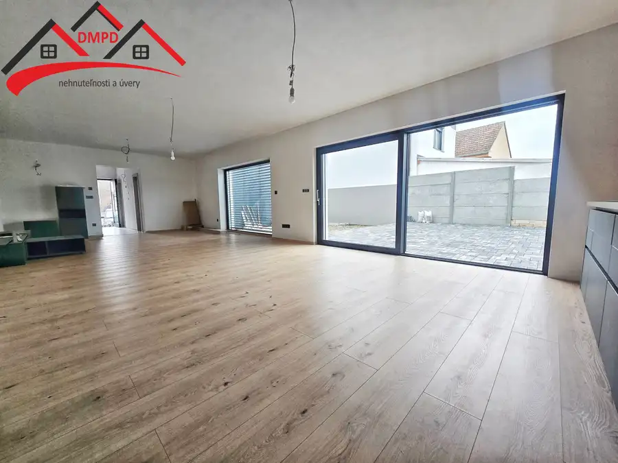
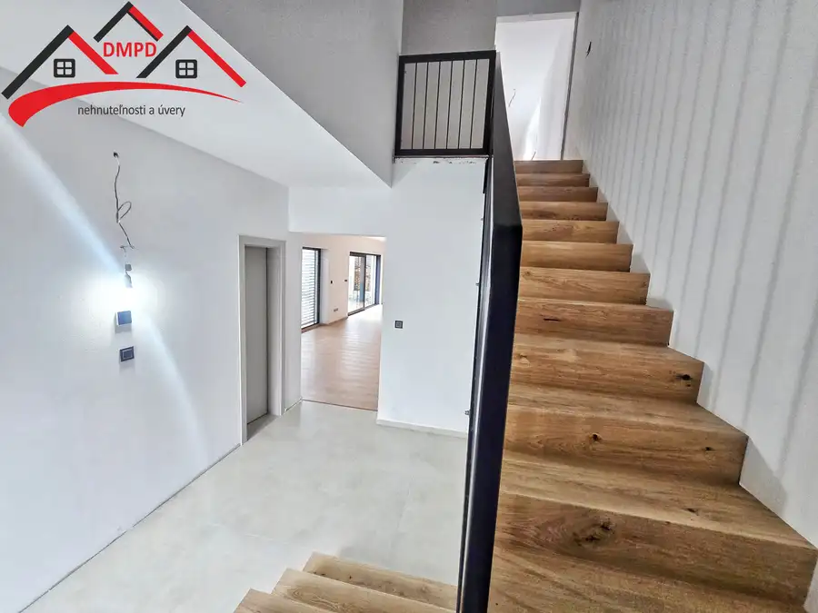

Ponúkame Vám na predaj novostavbu rodinný dom v obci Nedožery - Brezany.
Nedožery-Brezany








- Plocha152 m²
- StavNovostavba
- VlastníctvoOsobné
O nehnuteľnosti
Realitná kancelária DMPD real Vám exkluzívne ponúka na predaj novostavbu moderného 4-izbového rodinného domu v tichej a vyhľadávanej lokalite obce Nedožery-Brezany pri Prievidzi. Dom je ideálnou voľbou pre rodinu, ktorá hľadá pohodlie, funkčnosť a zároveň pokojné bývanie v blízkosti prírody. Základné informácie o nehnuteľnostiTyp stavby: Samostatne stojaci rodinný domPočet podlaží: 2 (prízemie + poschodie)Dispozícia: 4-izbovýÚžitková plocha: 152,08 m² - Prízemie: 77,03 m² - Poschodie: 75,05 m²Zastavaná plocha: 100,35 m²Pozemok: 242 m² (135 m² + 107 m²)Premyslená dispozíciaDenná zóna na prízemí ponúka:priestrannú obývaciu izbu prepojenú s kuchyňou a jedálenským kútom,vstupnú chodbu,samostatné WC,technickú miestnosť (napr. práčovňa/sklad).Nočná zóna na poschodí:tri samostatné izby,kúpeľňa s WC – komfort a súkromie pre každého člena rodiny.Dom je navrhnutý s dôrazom na funkčné oddelenie dennej a nočnej časti, čo zabezpečuje praktickosť a súkromie pri každodennom bývaní. Technické a stavebné riešenieKonštrukcia: Murovaný dom z kvalitnej tehly PorothermZáklady a stropy: železobetónová dekaStrecha: drevený krov, moderná plechová krytinaZateplenie: 15–20 cm polystyrén – úspora energií a tepelný komfort Exteriér a pozemokCelková výmera pozemku: 242 m²Orientácia: Hlavná fasáda aj terasa sú orientované na juh – ideálne pre milovníkov slnkaTerasa: súkromná, orientovaná do pokojného „vnútrobloku" mimo hlavnej cestyOplotenie: betónovo-keramické stĺpiky s dizajnovou výplňouParkovanie: priamo na pozemku – pohodlné státie pre 2 autáPrístup: asfaltová, obecná cesta Lokalita – Nedožery-BrezanyRodinný dom sa nachádza vo vyhľadávanej a pokojnej časti obce s výbornou dostupnosťou do Prievidze, v krásnom prostredí s miernym svahom a panoramatickým výhľadom na okolitú prírodu. V obci je kompletná občianska vybavenosť – obchod, škola, škôlka, zdravotné stredisko, služby a výborné dopravné spojenie.Prečo si vybrať túto nehnuteľnosť?Moderná novostavba bez kompromisovPremyslená dispozícia – komfortné bývanie pre celú rodinuTichá lokalita s výhľadom, ale zároveň dobrá dostupnosťEnergeticky úsporná konštrukcia.Rodinný dom bol tento rok skolaudovaný.Možnosť okamžitého nasťahovania po dokončení detailov podľa vlastných predstáv Zaujal Vás tento rodinný dom?Neváhajte nás kontaktovať pre viac informácií, obhliadku alebo cenovú ponuku.DMPD real – Váš partner vo svete nehnuteľností. E-mail: kalina@dmpdreal.sk Telefón: 0915 417 022 Web: www.dmpdreal.sk
Parametre
- Bezpečnosť
- Bezpečnostné dvere
- Doprava
- MHD
- Druh
- Rodinný dom
- Dátum zverejnenia
- 30. 06. 2025
- Energetický certifikát budovy
- V príprave
- Plocha pozemku
- 242 m²
- Počet izieb / miestností
- 4
- Počet kúpeľní
- 1
- Počet nadzemných podlaží
- 2
- Prístupová komunikácia
- Betónová
- Rok kolaudácie
- 2026
- Rok výstavby
- 2025
- Stav nehnuteľnosti
- Novostavba
- Telekomunikácie
- Káblová TV, Satelit
- Terás
- 1
- Terén pozemku
- Rovinatý
- Typ
- Predaj
- Typ konštrukcie
- Tehlová
- Vlastníctvo
- Osobné
- Vybavenie
- Terasa, Technická miestnosť, Vonkajší krb, Altánok / posedenie, Verejné parkovanie
- Vykurovanie
- Podlahové
- Zariadenie
- Čiastočne zariadené
- Zastavaná plocha
- 100 m²
- Úžitková plocha
- 152 m²